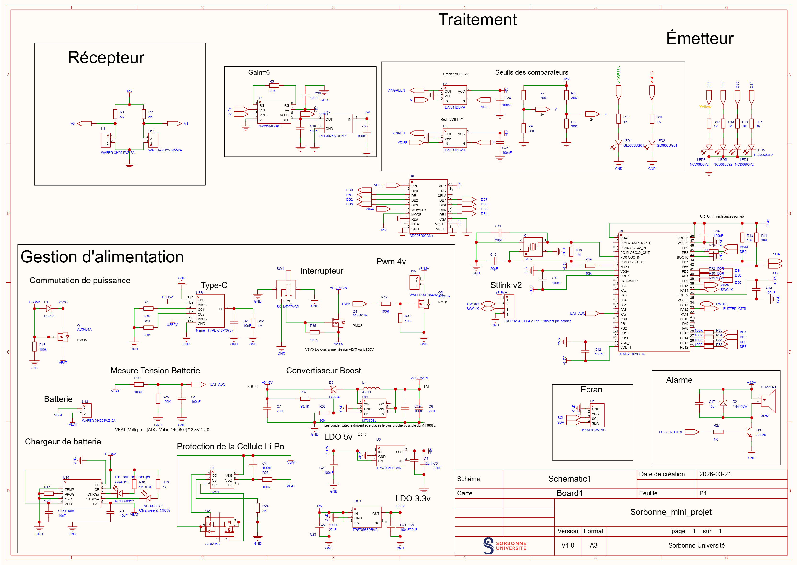
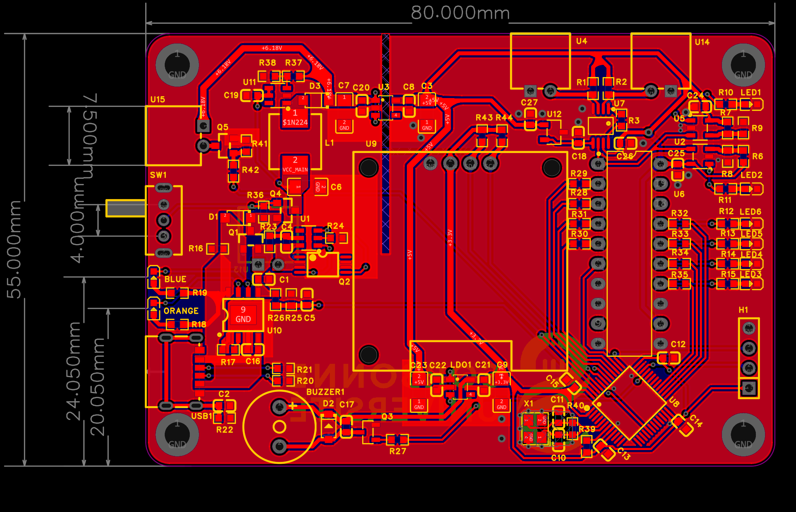
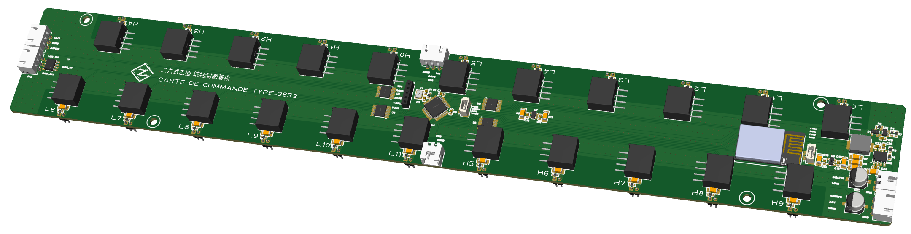

Interface pour radar Doppler
Conditionnement analogique de deux signaux en quadrature (I/Q) pour l’acquisition d’un radar Doppler.
Le projet concerne la carte d’interface entre un module radar et un système d’acquisition. Deux chaînes analogiques symétriques amplifient les sorties I et Q et les recentrent autour d’une référence compatible avec une alimentation de 3,3 V. Le schéma, le PCB et le rendu 3D présentés documentent la conception.
Radar Doppler ~24 GHz · I/Q · OPA2365 · Filtrage RC · PCB · ADC
- Architecture
- Deux voies I et Q indépendantes
- Conditionnement
- Quatre étages inverseurs avec OPA2365
- Sorties
- ADC1 et ADC2 · référence de 1,65 V
01 / Du signal radar à l’acquisition
Un radar Doppler fournit des signaux sensibles au déplacement d’une cible. Lorsque le module délivre des composantes en quadrature, les voies I et Q permettent de suivre une phase relative, en plus de l’information de fréquence. La carte ci-dessous n’est pas l’émetteur-récepteur hyperfréquence : elle assure le conditionnement des sorties analogiques du module radar.
- Radar I/QDeux signaux analogiques issus du module radar
- Liaison ACCondensateur de 1 µF et résistance d’entrée de 33 kΩ
- AmplificationDeux étages inverseurs par voie, autour de 1,65 V
- AcquisitionSorties ADC1 / ADC2 via 220 Ω
02 / Architecture électronique
Deux chaînes analogiques identiques
Chaque signal traverse deux étages à amplificateur opérationnel. Les résistances de 33 kΩ à l’entrée et de 160 kΩ en contre-réaction déterminent un gain nominal en module d’environ 4,85 par étage, soit 23,5 pour deux étages dans leur bande passante.
Référence à mi-alimentation
Deux résistances de 2,2 kΩ établissent un point de repos nominal de 1,65 V à partir du rail de 3,3 V. Un condensateur de 1 µF stabilise cette référence commune aux entrées non-inverseuses.
Liaison et filtrage
Les condensateurs de liaison de 1 µF suppriment la composante continue entre les étages. Chaque contre-réaction comporte un condensateur de 18 pF en parallèle avec 160 kΩ pour limiter la réponse aux hautes fréquences.
Interface et découplage
Les deux sorties passent par des résistances de 220 Ω avant ADC1 et ADC2. Des condensateurs de 100 nF sont prévus sur l’alimentation des circuits OPA2365. Le connecteur d’interface distribue également les alimentations 5 V, 3,3 V et la masse.
Les gains et fréquences caractéristiques ci-dessus sont des valeurs nominales issues des composants du schéma ; ils ne remplacent pas une mesure de la bande passante réelle ni la vérification de la dynamique des amplificateurs.
03 / Schéma électronique

04 / Circuit imprimé

05 / Rendu de la carte

06 / Principe de mesure Doppler et I/Q
Pour une onde réfléchie par une cible mobile selon l’axe du radar, le décalage fréquentiel Doppler est relié à la vitesse radiale par la longueur d’onde. Le suivi de la phase I/Q permet en outre d’estimer de petites variations de déplacement, sous réserve de déplier correctement la phase et de calibrer les voies.
|v| = λ |Δf| / 2
λ = c / f0, avec c la vitesse de propagation et Δf le décalage Doppler mesuré.
φ = atan2(Q − Vref, I − Vref)
Après retrait des offsets, la phase est reconstruite à partir des deux composantes.
Δx = λ Δφ / (4π)
Relation pour une mesure aller-retour, à partir d’une variation de phase déroulée.
Les relations de cette section sont théoriques. Aucune courbe d’essai ou précision de mesure validée n’est présentée à ce stade. Le signe de la vitesse dépend notamment de la convention retenue pour les voies I et Q.